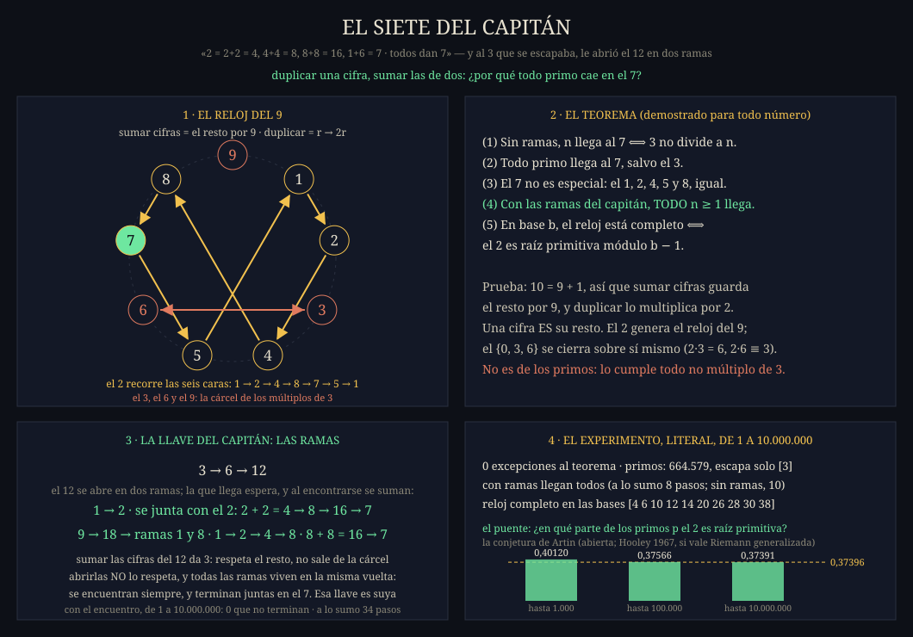

El cuento — todos dan 7
El capitán jugaba con los primos: sumar cada uno consigo mismo y, cuando quedaban dos cifras, sumarlas. El 2 da 4, 8, 16, y 1+6 es 7. El 13 da 1+3 = 4, 8, 16, 7. Probó con todos: «todos dan 7».
Todos menos uno. El 3 da 6, 12, y 1+2 vuelve a ser 3: una calesita que gira para siempre sin pasar por el 7. Y ahí el capitán hizo la jugada que convierte el juego en teorema: abrió el 12 en dos ramas, el 1 y el 2, y siguió cada una por su lado. Las dos llegaron al 7.
El enunciado
La regla, en base 10: una cifra se duplica; dos o más cifras se suman. Con las ramas, un número de dos o más cifras puede, en vez de sumarse, abrirse en sus cifras.
(2) todo primo llega al 7, salvo el 3
(3) el 7 no es especial: el 1, 2, 4, 5 y 8, igual; el 3, el 6 y el 9 son una cárcel cerrada
(4) con las ramas del capitán, TODO n ≥ 1 llega al 7
(5) en base b, el reloj está completo ⟺ el 2 es raíz primitiva módulo b − 1
La demostración, en criollo
Como 10 = 9 + 1, un número y la suma de sus cifras dejan el mismo resto al dividirlos por 9. Duplicar multiplica ese resto por 2. Así que, a lo largo de la regla, el resto solo cambia como r → 2r, en un reloj de nueve horas.
Un número de una cifra es su propio resto (con el 9 haciendo de 0). Y el doble de una cifra d ≥ 5 es 2d = 10 + (2d − 10), cuyas cifras suman 2d − 9: la cifra que queda vuelve a ser el resto. Una vez en una cifra, la regla camina exactamente el reloj r → 2r módulo 9.
Las potencias del 2 dejan 2, 4, 8, 7, 5, 1: el 2 es raíz primitiva módulo 9 y recorre, una detrás de otra, las seis horas que no son múltiplo de 3. Si 3 no divide a n, en a lo sumo cinco duplicaciones el resto es 7, y la cifra es el 7. Si 3 divide a n, el resto es 0, 3 o 6, y 2·0 = 0, 2·3 = 6, 2·6 = 12 ≡ 3: la cárcel se cierra sobre sí misma y nunca toca el 7. ∎
Las ramas — la llave que es suya
Sumar las cifras del 12 da 3: respeta el resto por 9, y por eso nunca puede sacar a nadie de la cárcel. Abrirlo en 1 y 2 no lo respeta: el 1 y el 2 son libres, y llegan. Si 3 divide a n, la regla cae en 3, 6 o 9; el 3 duplica a 6, el 6 a 12, el 9 a 18, y en a lo sumo dos pasos aparece un 12 o un 18 para abrir. La rama del 1 está en los dos. Con las ramas, todo número llega. ∎
El puente con los primos — la conjetura de Artin
El mismo argumento vale en cualquier base b, con b − 1 en lugar de 9: el reloj está completo exactamente cuando el 2 es raíz primitiva módulo b − 1. Cuando b − 1 es un primo p, eso es preguntar si el 2 genera todo el reloj de p. ¿Hay infinitos primos así? Es la conjetura de Artin (1927), todavía abierta; Hooley la demostró en 1967 suponiendo la hipótesis de Riemann generalizada. Artin predijo además qué parte de los primos son así:
| primos impares hasta | el 2 es raíz primitiva | parte | Artin |
|---|---|---|---|
| 1 000 | 67 de 167 | 0,40120 | 0,37396 |
| 100 000 | 3 603 de 9 591 | 0,37566 | 0,37396 |
| 10 000 000 | 248 491 de 664 578 | 0,37391 | 0,37396 |
La lámina

go run ./cmd/elsiete — juega la regla literal,
sumando cifras de verdad, hasta diez millones, mide el puente y dibuja esta lámina.Qué lo hace real
El experimento no usa el resto por 9 en ningún lado: juega la regla con cifras de verdad. Del 1 al 10 000 000: cero excepciones; de los 664 579 primos llegan todos menos el 3; con ramas no se escapa ninguno, en a lo sumo 8 pasos; y en las bases del 4 al 40, 37 de 37 coinciden con la teoría.
El juego y las ramas son del capitán, encontrados a mano. El taller lo demostró y lo midió después, en el F422, como manda la casa: primero el hallazgo, después la lupa.
Este teorema entró al libro sin la auditoría externa que pasaron los anteriores, a pedido del capitán: «es para eso, para que los que lo vean lo auditen». La prueba es corta y completa a propósito; si alguien le encuentra un error, va al Cuarto de los Errores con su nombre.
Teorema 8 del libro del taller · acta en docs/atomo/ELSIETE-ACTA.md · la regla del sello preside: estructura cerrada no es hipótesis demostrada — Todavía no.